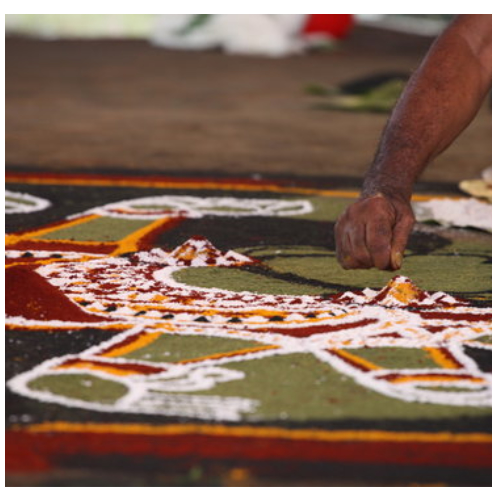

Valayanad
The holy land of Shakti, where the essence of creation and power converge
History of Sree Valayanad devi temple
Side angle view of temple
Valayanad Bhagavathi , honored as the family goddess of the Zamorin Kings of Kozhikode, is linked to a well-known legend. In a fierce battle with Valluva Konathiri, the king of Valluvanad, the Zamorin was surprisingly defeated, even though he had a stronger army and more wealth. Wondering why he lost, the Zamorin believed that Valluva Konathiri’s success was due to Bhagavathi’s blessings. Disguised, the Zamorin went to the Thirumanthamkunnu temple, the family temple of Valluva Konathiri, to meditate and seek her favor.
After long devotion, Bhagavathi appeared before him. The Zamorin asked her to come to his kingdom, and she agreed with one condition: if he looked back to check if she was still following, she would stop there. As they walked, the Zamorin eventually became unsure when he couldn’t hear her anklets and looked back. At that moment, Bhagavathi halted, saying she would go no further.
However, she threw her bangle, promising that her presence would be where it landed. The bangle rotated in place for a week before landing at the spot where the Valayanad Temple stands today, while the area where it rotated is known as Azhchavattom
At Azhchavattom, there is a small grove (kavu) dedicated to Devi called as Tarakal. On the final day of the temple festival (ulsavam), the Arattu Pooja is conducted here, and Bhagavathi’s ceremonial bath, or Arattu, is performed at the Trishalakulam near Azhchavattom shiva temple.
Azhchavattom,Tarakal kavu
Valayanad Devi temple is situated in Valayanad on Mankavu Govindapuram route in the city of Kozhikode.
Why This temple is different from other temples
Tanta sadhana
Tantra Sadhana involves reciting mantras, performing rituals with yantras, and attuning oneself to a particular level of reality, which lies at the heart of Tantra practice. The Devi temple at Valayanad has a unique identity and stands apart from other Devi temples in India. It is one of the rare Saktheya temples where pujas are conducted following the tradition of Rurujit worship, adding to its distinctive character and spiritual significance. The Sreechakra, crafted by the renowned Sivayogi Thayyavur Sivasankar, is placed in the sanctum sanctorum, where the presence of the goddess is believed to dwell continuously.
The temple shares a strong affinity with Kashmir Tantra, especially Kaula Tantra. This connection underscores the temple's importance within the wider framework of tantric practices and beliefs found throughout India.
Rurujith vidana
Throughout Kerala, numerous Saktheya prathishtas (Devi worship installations) are found in diverse forms. The main types of installations in Kali temples include Rurujit, Dakshajit, Darikajit, and Mahishajit. These names reflect the victories (Jit) of the goddess Kali over powerful demons: Rurujit specifically refers to Bhadhrakali, the slayer of the demon Ruru, while the other names denote her conquests over Daksha, Darika, and Mahisha.
These Saktheya prathishtas predominantly follow the Rurujit-Vidhana, a worship style influenced by Kashmiri Tantra. Notably, installations that do not reflect Kerala’s tantric traditions are quite rare. Kali is worshipped as a representation of nature through these practices, with Kodungallur recognized as the central hub for Kali temples.
According to tradition, it is believed that Parasurama, an avatar of Lord Vishnu, constructed the shrine and installed Shakthi Devi as Bhagavathi at Kodungallur. The temples dedicated to Rurujit adhere to a specific pattern of deity placement described in the Sesasamuccaya. This text states that Bhadhrakali, in the form of Rurujit, serves as the principal deity.
In these temples, Shiva is typically positioned facing east, while Rurujit Kali, faceing north . To the east of Rurujit, facing north, are the Sapta Matrukas (seven mothers), alongside Veerabhadra and Ganesha. The Kshetrapala is also located in the northeastern corner.
Sapthamathrukal (Seven mother's)
Saptamatruka , refers to a group of seven mother goddesses, each representing the Shakti, or female form, of different deities. They include Brahmani (the Shakti of Brahma), Maheshvari (the Shakti of Shiva), Kaumari (the Shakti of Kumara), Vaishnavi (the Shakti of Vishnu), Varahi (the Shakti of Varaha) , Indrani (the Shakti of Indra) and Chamunda, also known as Yami (the Shakti of Yama). The Saptamatruka is believed to play a significant role in the Rurujit Vidhana.
Several sacred groves in Kerala are designed according to the Rurujit Vidhana, Notable examples include Mannampurathu Kavu in Kasaragod, Madayi Kavu, Mamanikunnu Kavu, and Thiruvancheri Kavu, all located in Kannur. Other significant sites are Kalarivathukkal Kavu and Pisharikavu in Kozhikode, as well as Kaliyamvelli Kavu which are also in Kozhikode. In Malappuram, Thirumandhamkunnu Kavu holds its own importance, while Kodikunnu Kavu in Palakkad adds to the list of revered places.
The Kodungallur Devi Temple in Thrissur, Panayannar Kavu Devi Temple, and Muthoot Devi Temple in Pathanamthitta are further examples of temples adhering to Kashmiri style of worship
Unlike other temples, here in Valayanad, you can see carved idols of the Sapthamathas
Major Festivals
Annual Festival (ulsavam)
The annual festival begins each year on the day of Karthika in the month of Makaram and lasts for seven days. During this time, the Devi's 'Udaval' kept at the Tali Mahadeva Temple. A few days prior to the 'Uthsavam' (festival), it is taken to the Valayanad Temple, marking an important part of the celebrations. The festival features various art forms, including Bharatanatyam, Mohiniyattam, Thiruvathira, and Chendamelam (Tayambaka), Ganamela , Nadakam etc, are integral to the festival. Palivetta and Arattu are significant days during the festival.Additionally, in the month of April, Thottam Pattu is held at the Tarakal Kavu
Navarathri ulsavam
The Navarathi Ulsavam begins on the first day of Navarathri and continues for nine days, showcasing a variety of art performances, including cultural dances and Tayambaka. Special poojas are conducted throughout the festival, adding to the spiritual atmosphere. One of the key highlights is the Vidyarambam ceremony at Vatoli Illam , which holds particular significance as a rite of initiation for children into learning and education

Kalamezhuthu Pattu
Kalamezhuthupattu is observed from 1st Vrichikam for 41 days during the Mandala season
Chandhattam
Chandattam is a special pooja event celebrated at Valayanad, held in the month of Karkidakam on a Wednesday
Illam Nira
Illam Nira is conducted on a specific day in the Malayalam month of Karkidakam.
Ramayana Parayanam and Sapthaha Yagnam
During the month of Karkidaka , Ramayana Parayanam is conducted from the first to the last day . Additionally, once a year Sapthahayagnam is also conducted in temple.
Pooja details
An important ritual conducted in this temple is the Guruthy Tharpanam.
Temple wil be open from 5am morning to 12pm and from 5:30 pm to 7:30pm
Morning : Usha pooja , Ravilathe pooja , Ucha pooja
Evening : Deeparathana , Atharaa pooja
In Tuesday , Friday , Sunday there will be Guruthi pooja after Atharaa pooja.
Shathrusamhara homam , Mrithunjaya homam etc are conducted at specific days in every month.
Also there is Kuttichatan Kavu ,Kariyathan Kavu located outside the temple and hosts various poojas as well
Illams connected to Valayanad temple
There are five Moosad families who have the traditional right to do observances in the temple. The five illams are Vattoli-illam, Vadakke-illam, Kozhiparambillam, Naduvilakandi illam, and Kozhikodenparamb illam The chief poojaris are Vattoli-illam and Vadakke-illam, as an inherited right.